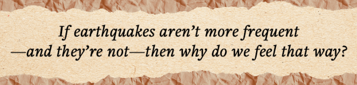
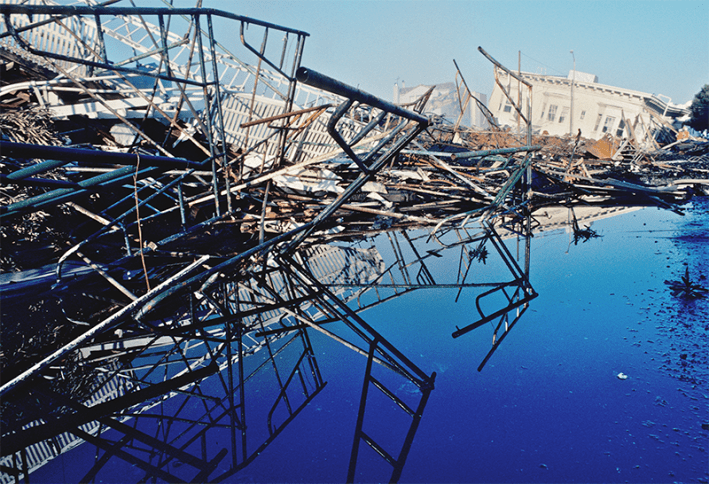
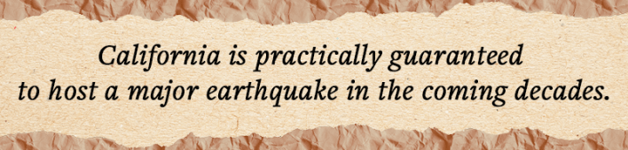

The ground began to shake beneath Mineral, Virginia, on a sultry August afternoon in 2011. Dense bedrock carried shockwaves unusually far from the rolling Appalachian foothills, across the range’s long, northeasterly spine. Millions of people from Georgia to Canada snapped to attention as they felt what few expected so far from America’s geologically dynamic Pacific coast: an earthquake.
The internet erupted seconds later: “OMG EARTHQUAKE!!!”, read one tweet. In the first minute, people fired off 40,000 tweets. By the fourth minute, 3 million Facebook users had posted updates using the word “earthquake.” Within eight minutes, someone created a Wikipedia page. At the peak, Twitter users were pumping out roughly 5,500 messages per second.
The magnitude 5.8 temblor was far from the largest to shake the United States—that distinction belongs to Alaska’s magnitude 9.2 quake in 1964—but was likely felt by more people than any earthquake in North American history. The quake caused an estimated $200-$300 million in property damage, including to Washington, D.C. landmarks such as the Washington Monument and the National Cathedral. Yet no one died, and only a few suffered minor injuries. By Californian standards, the seismic episode barely merited a shrug.
As the dust settled, a meme went viral. A cheap white plastic table and chairs sat on a sunny suburban lawn. One chair lay toppled on its back. The caption read: “2011 VA Earthquake.” Beneath it: “We Will Rebuild.”
Read more: “Crying Wolf in an Age of Alarms”
The meme captured the disconnect: An unusual but modest event had triggered outsized attention. According to United States Google Trends data, searches for the term “earthquake” spiked during the Virginia temblor to the highest levels since tracking began in 2004, nearly doubling similar searches regarding the devastating magnitude 9.1 earthquake and tsunami that struck Japan earlier that year, which killed about 19,000, caused up to $300 billion in damages, and triggered the Fukushima nuclear disaster.
Unlike the Pacific Coast’s active plate tectonic boundary, the Atlantic Seaboard is considered a “passive” margin today, where earthquakes are small, infrequent, and mostly the result of reawakening old tectonic scars or rebound from vanished glaciers. Because the 2011 quake felt unusually strong for a geologically quiet region—where most Americans and media institutions reside—could it have inspired warped perceptions on the frequency and intensity of other earthquakes?
I began by asking seismologists a simple question: Are earthquakes becoming more frequent? The answer, a resounding no, came with a few exceptions (we’ll get to those). What spurred my inquiry was a discussion about how earthquakes seemed more common in unusual places, like New York City or St. Louis. But if they aren’t more frequent—and they’re not—then why do we feel that way?
In 1985, Neil Postman described the dizzying transformation in how information travels in Amusing Ourselves to Death. Stories once traveled no faster than we could run. Once horseback yielded to rail, telegraph, phone, television, and eventually the internet, information that may have taken years in transit now arrives nearly instantaneously. Over mere generations, our awareness broadened from the few things we could personally touch to anything we can conceive to wonder about: Many can sooner name Pluto’s moons than recall their local mayor.
In our hyperconnected world, where information ricochets through our collective consciousness like a pinball, countless things compete for our attention. But attention, more than memory, is remarkably limited, says Paul Slovic, a psychologist at the Oregon Research Institute. He likens it to a spotlight with a narrow beam. We assume we can widen it or aim it at many things at once, but we can’t. We can only move the beam from one target to another; everything else remains out of mind. Most of the time, earthquakes remain in the background of our awareness. Instead, we focus on the here and now, a psychic gift from our earliest ancestors who survived by responding to immediate threats.
Because I’m human, I began with a suspicion I expected scientists to confirm. I assumed the internet and the 24/7 news cycle, tuned for drama and outrage, had distorted how we think about earthquakes. Several seismologists and social scientists I spoke with immediately offered that explanation as at least part of the story, while others seemed to find the matter settled: “It’s social media,” one prominent seismologist said, shaking her head.

It’s easy to understand those reactions. For centuries, earthquake awareness came largely from slow-moving stories that emerged from the rubble. Word of mouth gave way eventually to television, which brought visceral imagery into our living rooms. But aside from a few CC-TV security videos and “lucky” shots, quake aftermath scenes dominated—crumpled concrete and rebar, rescuers whisking away the bloody and broken.
The first televised earthquake struck during game three of the 1989 World Series between the Oakland Athletics and the home team, the San Francisco Giants. The 6.9-magnitude Loma Prieta earthquake, among California’s last major tremors, killed 63 and caused upward of $10 billion in damage. However, the live imagery was arguably far surpassed 15 years later when a devastating earthquake and tsunami struck unsuspecting beachgoers throughout Southeast Asia in late 2004. Home videos revealed something truly human: Palpable terror on faces and body language as the seas sucked away and then surged, inundating everything. Muddy water filled with debris, animals, and people. And the sounds.
Now, so-called democratized videos—those that any of us can upload on the internet and share, bypassing traditional media barriers—captured during quakes “pop up really quickly,” says USGS geophysicist and earthquake statistician Morgan Page. On March 28, 2025, a 7.7-magnitude earthquake struck Myanmar, killing more than 4,900 people. Heaps of videos appeared in the immediate aftermath. A security camera captured a fault surface rupture for the first time. In a video viewed more than 24 million times, care-free loungers in a Bangkok high-rise infinity pool—over 600 miles from the Myanmar epicenter—were clearly surprised as the earthquake sent water sloshing violently. Fortunately, they scrambled out in time, avoiding the fate of their floaties, which spilled over the edge and tumbled to the streets far below.
We now know more about devastating events that, centuries ago, might have passed unnoticed beyond the local communities that experienced them. When our world is small, once-in-a-generation events feel rare. When our awareness broadens, they can seem constant. A certain paradox therefore emerges. We may perceive the world as less stable than it is, at least statistically speaking. Psychologists refer to this phenomenon as the availability heuristic: The more readily examples come to mind, the more common they seem. For some people, a steady drumbeat of instability may manifest as low-grade unease, a sense that something is changing. Yet social scientists say nothing shapes perceptions and memory like firsthand experience.
Scientists and natural hazard communicators are divided on whether any of our expanded, technology-fueled awareness has translated into protective behavior. Many insist the public isn’t adequately prepared. Others argue that people are doing about as well as can be expected given the psychological and economic realities they face. This reflects a sharp division between human experience, memory, and the slow heave of geologic time.
“I’m in the Bay Area,” says Stanford University psychologist Gabrielle Wong-Parodi. “We haven’t had a major earthquake since 1989. Not only is it out of scope in terms of what people remember—a lot of people here have never even experienced a [major] earthquake.”
There may be no better place to understand earthquake frequency than California. The state, wealthy, densely populated, and absolutely teeming with sensors, also hosts a populace accustomed to motion underfoot. Page says Southern California’s notoriously testy seismic hotbed has experienced fewer earthquakes in the last decade than it did in the 1980s and 1990s. USGS geophysicist Susan Hough agrees: In the contiguous United States, 2025 was “really quiet”—California did not experience an earthquake of magnitude 5.5 or greater. In fact, the largest earthquake to strike an area in the contiguous U.S. in 2025 was a 5.4-magnitude event in West Texas that Hough says is linked to oil and gas activities.
This is an important caveat: Some types of earthquakes have become more frequent. In Texas, Oklahoma, Kansas, and other locations, wastewater injected into deep reservoirs, mostly a secondary byproduct of fracking operations, has been linked to increased local earthquake activity. This phenomenon, induced seismicity, also appears to make earthquakes seem more common anywhere to the people who experience them.

TWISTED METAL: Some of the damage from the 6.9-magnitude Loma Prieta earthquake in San Fransisco in 1989. Credit: John Nakata / Adobe Stock.
Climate change also sometimes enters the conversation. Receding glaciers and changing seasonal water loads can occasionally nudge faults already near failure. But all forms of induced seismicity are highly local, minor in magnitude, and play a very distant second fiddle to the main driver of concerning quakes: plate tectonics. “It’s going to be a straw that breaks the camel’s back,” says Hough. “But then the headline writers go to town.”
Scientists know earthquakes haven’t become more common in recent decades for a simple reason: They are so good at detecting them. Since the 1960s, an increasingly dense seismometer network has revealed millions of previously unnoticed quakes, sharpening our sense of a landscape that is very much alive. In Southern California alone, scientists now record roughly 10,000 earthquakes each year, most too small to feel and many that are noticeable yet rarely damaging.
When those quakes strike, a vast, automated communication network springs into action, pushing alerts and updates onto screens across the west. Mark Benthien, the director of public education and preparedness at the Statewide California Earthquake Center, says the system, while essential for public safety, also amplifies awareness of seismic activity, detecting even tremors equivalent to “dropping an iPhone.”
When the ground rumbles, information automatically passes into the Earthquake Early Warning system, which routes from the USGS ShakeAlert into millions of smartphones within seconds, via apps like MyShake. Users predefine alerts like Do Not Disturb settings: “Maybe I have it at 3.5 during the day. But at night, I raise that up to 4.5 or 5.0,” says Benthien. People can now receive an alert before they experience shaking, allowing them to take state-sanctioned action: “Drop, Cover, and Hold On!”

And from automated alerts come automated news: Media networks scrape the notifications and publish bot-written stories with basic earthquake information. This rapid information network is widely praised and undeniably important. It has since been replicated in the Pacific Northwest, with similar systems operating in New Zealand and planned for expansion into Alaska and Nevada.
But the system isn’t flawless. In 2017, the LA Times automatically tweeted about a 6.8-magnitude quake off the Santa Barbara coast—only the “new” quake was really a Prohibition-era seismic event from 1925. In December 2025, the USGS ShakeAlert system reported a 5.9-magnitude earthquake near Carson City, Nevada, generating automated news articles and smartphone alerts, just as intended. The problem? The quake didn’t happen.
Into that information flood, other voices enter. YouTube videos claim to predict the “big one” or dwell on other unlikely threats, like cataclysmic eruptions or earthquakes in Yellowstone. “You have individuals fueling this alarmism, and they’ve always been around,” says Hough. She describes how Charles Richter, the inventor of the namesake earthquake scale, kept a folder called “nuts and flakes”—those who wrote him with unconventional earthquake trigger theories, from harmonic convergence to the weather. But in those days, “Someone had to find an address and write a letter … now, people have podcasts and Twitter channels. You get these sophisticated-looking accounts that are pushing out predictions, latching on to activity to make it sound like it’s alarming when there’s nothing out of the ordinary.”
This has prompted some scientists to take a more active online role. “People are complaining because there is nobody to answer their questions on the internet,” says seismologist Rémy Bossu of the Euro-Mediterranean Seismological Centre in France, who views pre-bunking as a vital scientific task in the online age. “If seismologists do not take their share in public information, we have an information void which allows charlatans and crooks to say whatever they want.”
When I raised the question of why people might feel that earthquakes are more frequent, Carnegie Mellon psychologist Baruch Fischhoff challenged me on whether that was even true. He explains that we tend to assume others are irrational when their behavior doesn’t make sense to us. Yet “people have plausible mental models of how things work,” he says.
Part of the disconnect may be related to classifications and statistics—such as logarithmic magnitude scales—which, while critical to scientists, can either be confusing or carry far less weight among a public that values experience and stories. Fischhoff says many experts blame the public for misunderstanding: “It’s easy to say, ‘Oh, the public is innumerate,’ when actually, we’ve done a terrible job of communicating.” The 2011 Virginia quake demonstrated that even a relatively moderate event can lodge itself in the collective psyche when widely felt and shared online. “The magnitude cannot measure the societal importance of an earthquake,” says Bossu, who studies the public reaction to seismic events.
Paul Slovic says that humans have two distinct ways of processing risk. Risk as feeling is fast, automatic, and experiential—the gut response conditioned by direct experience. Analytical risk is slow, effortful, and abstract. That’s the likelihood of a magnitude 7.0 quake, which changes from region to region and across different time intervals. Many scientists live more in the second mode. Most people live more in the first.
The problem with earthquakes is that the gut feeling is largely unavailable to most people in most places. There’s little to no memory and no perceptible buildup—no smell, no darkening skies, no rising water to trigger the intuitive system. The only pathway to awareness is analytical, which requires significantly more effort, communication, and translation, all while fighting against more immediate demands. That’s why even Slovic, a risk perception expert, doesn’t feel he’s adequately prepared for a major earthquake that could suddenly strike his home in Western Oregon.
As the population grows and urban areas become denser, risks naturally rise even if the underlying mechanisms remain unchanged. Even smaller quakes in places like Boston, where virtually no seismic culture exists amongst the longstanding masonry of our forefathers, could do serious damage.
Because earthquakes occur unpredictably and according to an unfathomably slow geologic clock, with recurrence intervals of thousands of years, it’s psychologically difficult to be prepared for something that could strike in the next instant—or many years from now—regardless of threat awareness.
Part of the problem with the public’s perception of earthquake danger is the difficulty in accurately predicting when the ground might shake again. To be clear, no one can predict earthquakes. However, geologists can establish probabilities of near-future ones, an attempt to resolve the enduring tension between how geologic and human timescales overlap. To do so, scientists like Katherine Scharer, a USGS paleoseismologist, have spent decades digging trenches across major faults, extending earthquake histories far beyond the written record. It turns out that earthquakes cluster with a rough cadence, but with long quiet periods that can lull people into a sense of safety.
“We have a pretty good handle on the last 1,000 years,” she says. But translating that into human terms is daunting. California is practically guaranteed to host a major earthquake in the coming decades, but to scientists like Scharer, that broad proclamation is not enough. She says it’s like saying, “I’m 100 percent sure in the future it’s going to rain. But where?”
Read more: “The Ecological Catastrophe You’ve Never Heard Of”
Harold Tobin, a geophysicist at the University of Washington, says the public tends to therefore sort into two camps: Either they see disaster as inevitable and beyond control, or they grow complacent as memories fade or awareness never fully takes hold. “I teach undergrad students who weren’t born yet when the Nisqually earthquake happened”—a February 2001 6.8-magnitude quake that struck Seattle, killing no one. For many, the scale of an enormous earthquake along America’s famed Pacific Coast is almost too much to fathom. And so we don’t. Tobin says that’s a grave error. “We have to take these hazards very seriously. But taking them seriously means doing things to improve our likelihood of coming out well on the other side.”
Tobin points to Japan, where about 19,000 people died in the 2011 earthquake and tsunami. But it could have been much worse. Due to Japan’s interwoven culture of seismic risk and alert systems, 90 percent of people in the tsunami “death zone” fled to safety ahead of the deluge. “Familiarity breeds understanding and respect, not fear.”
Much has changed in California since the last truly “big one”—the magnitude 7.9 1906 San Francisco earthquake that struck an urban setting. Now, the state boasts the world’s fourth-largest economy. Los Angeles County is home to about 10 million people. Scharer says a 7.2-magnitude quake along the southern San Andreas, likely to occur in the coming decades, could destroy major connective infrastructure between southern California and the rest of the U.S.
For Scharer, who lives in Pasadena, this impending reality occasionally hits home. “Every once in a while, I’ll be walking my dog and just the realization of how serious it is flicks through my mind. The hairs stand up on my arm. You go, ‘oh boy.’ We’re kind of untested, you know.” She added, “None of us would be surprised by a magnitude 7.8.”
“When newscasts say ‘Oh, that magnitude 4.6—that was a lot,’ ” says Scharer, shaking her head. “That was really small. I don’t want to sound glib or belittling in any way. It’s just that those are very small releases of energy.” Californians have grown accustomed to small and even moderate quakes, perhaps even impatient with warnings about what’s coming.
Earthquakes may seem to be happening everywhere, and that’s probably because they are—especially when our awareness broadens to a global scale. But the planet isn’t suddenly more alive. We’re seeing more of it, but not necessarily in a way that makes us more prepared. Experience is the best teacher, but most of us haven’t gotten that lesson. And even for those who have, experience can mislead. Take, for example, one of California’s last major quakes.
When the 6.9-magnitude 1989 Loma Prieta quake struck the Cypress Street Viaduct of Oakland’s Nimitz Freeway, thick concrete pillars snapped like matchsticks. The top of the double-deck I-880 began to crash down like great dominoes, enormous slabs of cement falling in stepwise fashion as people tried to outrun or outdrive them. Many did not—42 people lost their lives there, two-thirds of the total quake death toll of 63. Thankfully, with so many people at home and tuned into the World Series across the bay, the freeway traffic at 5 o’clock on a Tuesday evening was relatively light.
Like all earthquake survivors, those affected by the Loma Prieta quake didn’t share a common experience. Geology, engineering, proximity, and random luck conspired to define and even distort experience and memory. Wong-Parodi, who now studies how people make decisions under climate and environmental risk at Stanford, vividly remembers that day as a child in the Bay Area. Unlike those who stood outside their ruined homes or stared, bewildered and horrified at what they saw on the Cypress freeway, at her childhood home: “The only thing that happened was that the vase was about to fall over. That’s it. I thought it was fun. We had no school the next day. It was great.” 
Want to know more? Read “How to Predict Earthquakes.”
Lead image: Tasnuva Elahi; with images by Evorona and Creative Veila / Adobe Stock
References
- Original Article: https://nautil.us/the-earthquake-illusion-1280874/